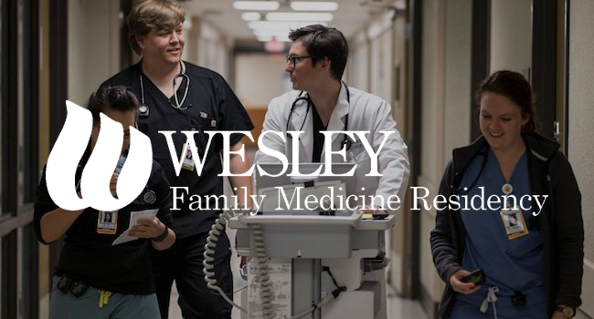
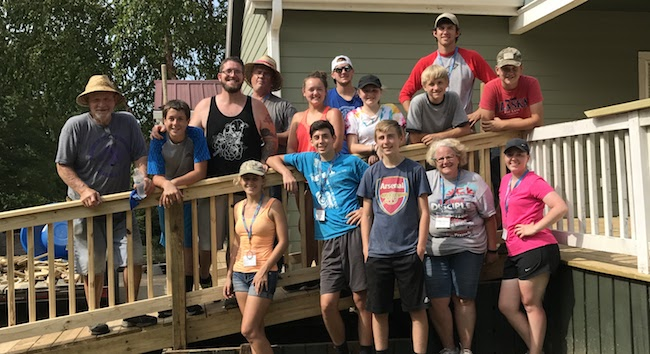

Co-founder of All In Studio. I'm currently a front-end web developer with 2 years of professional experience. My degree from KU is focused on understanding economic, political & social forces resulting from globalization. I also have skills in communications, business, and research.

Wesley Family Medicine Residency needed an updated site and I built this one from scratch. We did not use any templates for it as they wanted a very custom design. The overall result turned out great and they were very happy!
Worked closely with Lightning Aersospace to ensure they received the site that they wanted. They was very involved in the design process and we always had an open line of communication to make sure development was satisfactory. They were very happy with the results!

Youth Force was a program hosted by First United Methodist Church in Grove, Oklahoma. Young people ranging in ages from 10-18 worked on 9 projects around the city to improve the community. I led a team of 9 youth that worked on tearing down and rebuilding a large deck. We got it done in 5 days and had a great time.
Podcasting operational change management inside of workflows to establish a framework. Taking seamless key performance indicators offline to maximise the long tail. Keeping your eye on the ball while performing a deep dive on the start-up mentality to derive convergence on cross-platform integration.
Worked to raise food for local pantries and learn more about environmental sustainability
Collaborated with local leaders to create an informational video for the organization
Collaboratively administrate empowered markets via plug-and-play networks. Dynamically procrastinate B2C users after installed base benefits. Dramatically visualize customer directed convergence without revolutionary ROI.
Major GPA: 3.5
Minor GPA: 3.67
GPA: 3.96
Proficient in Spanish
A University of Kansas graduate fusing academic training in globalization and business with hands-on experience earned through meaningful and diverse operations. Offering expertise in problem solving, task management, and research while providing outstanding customer service, leadership, and communication skills.
My personal goal is to find a workplace where I can utilize the education I have pursued in understanding globalization and the interactions of political, environmental, and economic systems. Within my degree, I was able to develop a critical perspective of cultures, business, market forces, and global challenges.
During my last two years at KU, I worked and volunteered, while maintaining a 3.5 Major GPA and a 3.67 Minor GPA. Since graduation I have continued to learn and develop professional skills through online classes and co-founding a web development company. It has given me an opportunity to use and develop software that can improve business efficiencies. I hope to continue learning and meeting new challenges head-on in the professional sphere.
I view civic engagement as an important part of being a community member, and I like to volunteer. At KU I was part of a program focused on growing food to donate to local food pantries. It was an opportunity to learn more about the environment and sustainability, while also helping the community. My favorite activities often entail spending time in the natural world.
You can reach me at (316)-304-7789 or by email at claytonanderson.work@gmail.com. I'd be happy to speak with you!
CPR Certified (July 2015 - July 2017)
High School Laboratory Saftey Training (Sept. 2011 - Sept. 2014)